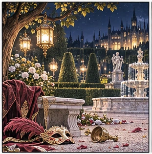
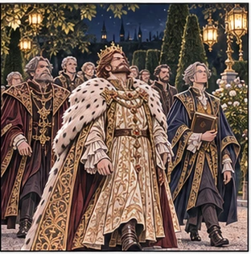
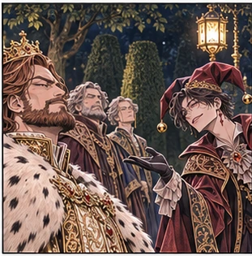
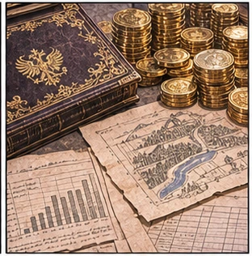
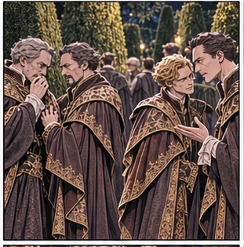
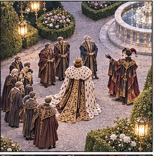
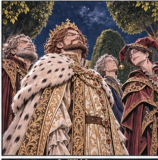
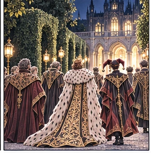

1-10막 · 정원의 회의
한국어 번역은 독일어 원문에 대응하는 자동 번역 초안입니다.

독일어 원문 · 한국어 번역
Lustgarten
FAUST:
Verzeihst du, Herr, das Flammengaukelspiel?
KAISER:
Ich wünsche mir dergleichen Scherze viel.--
Auf einmal sah ich mich in glühnder Sphäre,즐거움의 정원 파우스트: 주님, 화염 속임수를 용서하십니까? 황제: 그런 농담을 많이 하고 싶어요.-- 갑자기 나는 빛나는 구체 속에 있는 내 자신을 보았습니다.

독일어 원문 · 한국어 번역
Es schien mir fast, als ob ich Pluto wäre.
Aus Nacht und Kohlen lag ein Felsengrund,
Von Flämmchen glühend. Dem und jenem Schlund
Aufwirbelten viel tausend wilde Flammen마치 명왕성이 된 것 같았습니다. 밤과 석탄으로 이루어진 바위바닥이 있었고, 불꽃으로 빛나고 있습니다. 이것 저것 목구멍 수천 개의 야성적인 불꽃이 소용돌이쳤다.

독일어 원문 · 한국어 번역
Und flackerten in ein Gewölb' zusammen.
Zum höchsten Dome züngelt' es empor,
Der immer ward und immer sich verlor.
Durch fernen Raum gewundner Feuersäulen그리고 함께 금고 속으로 깜박거렸다. 가장 높은 돔까지 솟아올랐고, 항상 자신이 되었고 항상 자신을 잃은 사람. 먼 우주를 휘감는 불기둥
독일어 원문 · 한국어 번역
Sah ich bewegt der Völker lange Zeilen,
Sie drängten sich im weiten Kreis heran
Und huldigten, wie sie es stets getan.
Vom meinem Hof erkannt' ich ein und andern,사람들이 길게 줄을 서서 움직이는 모습을 보니 그들은 넓은 원을 그리며 앞으로 나아갔다 그리고 늘 그랬듯이 경의를 표했습니다. 내 농장에서 나는 서로를 알아보았습니다.
독일어 원문 · 한국어 번역
Ich schien ein Fürst von tausend Salamandern.
MEPHISTOPHELES:
Das bist du, Herr! weil jedes Element
Die Majestät als unbedingt erkennt.
Gehorsam Feuer hast du nun erprobt;나는 천 마리의 도롱뇽의 왕자처럼 보였습니다. 메피스토펠레스: 바로 당신입니다, 주님! 왜냐하면 모든 요소는 무조건적으로 위엄을 인정합니다. 이제 너희는 순종하여 불을 시험하였느니라.
독일어 원문 · 한국어 번역
Wirf dich ins Meer, wo es am wildsten tobt,
Und kaum betrittst du perlenreichen Grund,
So bildet wallend sich ein herrlich Rund;
Siehst auf und ab lichtgrüne schwanke Wellen,가장 거칠게 몰아치는 바다에 몸을 던져라. 그리고 진주가 풍부한 땅에 발을 디디자마자, 이것은 놀랍도록 기복이 있는 모양을 만들어냅니다. 연한 녹색의 물결이 위아래로 흔들리는 것이 보입니다.
독일어 원문 · 한국어 번역
Mit Purpursaum, zur schönsten Wohnung schwellen
Um dich, den Mittelpunkt. Bei jedem Schritt,
Wohin du gehst, gehn die Paläste mit.
Die Wände selbst erfreuen sich des Lebens,보라색 테두리로 가장 아름다운 아파트로 떠오르다 당신에 대해, 중심. 모든 단계마다, 어디를 가든지 궁궐은 함께 갑니다. 벽 자체는 삶을 즐기고,

독일어 원문 · 한국어 번역
Pfeilschnellen Wimmlens, Hin- und Widerstrebens.
Meerwunder drängen sich zum neuen milden Schein,
Sie schießen an, und keines darf herein.
Da spielen farbig goldbeschuppte Drachen,앞뒤로 분투하는 화살의 속도. 바다의 경이로움이 새롭고 온화한 빛을 발하며, 그들은 총을 쏘고 아무도 들어갈 수 없습니다. 형형색색의 금비늘 용이 그곳에서 놀고 있고,

독일어 원문 · 한국어 번역
Der Haifisch klafft, du lachst ihm in den Rachen.
Wie sich auch jetzt der Hof um dich entzückt,
Hast du doch nie ein solch Gedräng' erblickt.
Doch bleibst du nicht vom Lieblichsten geschieden:상어가 입을 벌리고 당신이 목구멍에 대고 웃습니다. 지금도 법원은 당신을 얼마나 기뻐하고 있습니까? 당신은 그런 군중을 본 적이 없습니다. 그러나 당신은 가장 사랑스러운 것과 이혼한 채로 남아 있지 않습니다.

독일어 원문 · 한국어 번역
Es nahen sich neugierige Nereiden
Der prächt'gen Wohnung in der ew'gen Frische,
Die jüngsten scheu und lüstern wie die Fische,
Die spätern klug. Schon wird es Thetis kund,호기심 많은 Nereids가 다가오고 있습니다 영원한 신선함을 간직한 웅장한 아파트, 막내는 물고기처럼 수줍음 많고 음탕하고, 나중에 똑똑해질 거예요. 테티스는 곧 그 사실을 알게 된다.

독일어 원문 · 한국어 번역
Dem zweiten Peleus reicht sie Hand und Mund.--
Den Sitz alsdann auf des Olymps Revier...
KAISER:
Die luft'gen Räume, die erlass' ich dir:
Noch früh genug besteigt man jenen Thron.그녀는 두 번째 펠레우스에게 손과 입을 내밀었습니다. 그 자리는 올림푸스 영토에... 황제: 내가 당신에게 남기는 통풍이 잘되는 공간은 다음과 같습니다. 당신은 곧 왕좌에 오를 것입니다.
독일어 원문 · 한국어 번역
MEPHISTOPHELES:
Und, höchster Herr! die Erde hast du schon.
KAISER:
Welch gut Geschick hat dich hieher gebracht,
Unmittelbar aus Tausend Einer Nacht?
Gleichst du an Fruchtbarkeit Scheherazaden,메피스토펠레스: 그리고 지고하신 주님! 당신은 이미 지구를 가지고 있습니다. 황제: 무슨 행운이 당신을 여기까지 데려왔나요? 천일야화에서 바로 나왔나요? 당신이 다산의 셰헤라자덴과 같다면,
독일어 원문 · 한국어 번역
Versichr' ich dich der höchsten aller Gnaden.
Sei stets bereit, wenn eure Tageswelt,
Wie's oft geschieht, mir widerlichst mißfällt.
MARSCHALK:
Durchlauchtigster, ich dacht' in meinem Leben나는 당신에게 모든 은총 중에서 가장 높은 것을 확신합니다. 당신의 하루가 세상일 때 항상 준비되어 있어야 합니다. 자주 일어나는 일이므로 그것은 나를 역겹게 만듭니다. 마샬크: 가장 고요한 전하, 나는 내 인생에서 생각했습니다
독일어 원문 · 한국어 번역
Vom schönsten Glück Verkündung nicht zu geben
Als diese, die mich hoch beglückt,
In deiner Gegenwart entzückt:
Rechnung für Rechnung ist berichtigt,가장 아름다운 행복을 알리는 것이 아니라 이것보다 나를 매우 기쁘게 하는 것은, 당신의 존재를 기쁘게 생각합니다: 송장 수정 후 송장,
독일어 원문 · 한국어 번역
Die Wucherklauen sind beschwichtigt,
Los bin ich solcher Höllenpein;
Im Himmel kann's nicht heitrer sein.
HEERMEISTER:
Abschläglich ist der Sold entrichtet,고리대금업자의 발톱은 진정되고, 나는 이 지옥같은 고통에서 벗어났습니다. 천국에서는 이보다 더 행복할 수 없습니다. 아미 마스터: 급여는 선불로 받았고,

독일어 원문 · 한국어 번역
Das ganze Heer aufs neu' verpflichtet,
Der Landsknecht fühlt sich frisches Blut,
Und Wirt und Dirnen haben's gut.
KAISER:
Wie atmet eure Brust erweitert!온 군대가 다시 헌신했습니다. 란츠크네히트는 신선한 피를 느낍니다. 그리고 집주인과 매춘부들은 그것을 좋아합니다. 황제: 숨을 쉬면 가슴이 얼마나 넓어지는가!
독일어 원문 · 한국어 번역
Das faltige Gesicht erheitert!
Wie eilig tretet ihr heran!
SCHATZMEISTER:
Befrage diese, die das Werk getan.
FAUST:
Dem Kanzler ziemt's, die Sache vorzutragen.주름진 얼굴이 환호한다! 얼마나 성급하게 접근하는가! 재무: 일을 해본 사람들에게 질문하십시오. 파우스트: 그 문제를 발표하는 것은 교육감의 의무입니다.
독일어 원문 · 한국어 번역
KANZLER:
Beglückt genug in meinen alten Tagen.--
So hört und schaut das schicksalschwere Blatt,
Das alles Weh in Wohl verwandelt hat.
"Zu wissen sei es jedem, der's begehrt:총리: 옛날에는 충분히 행복했어요.-- 그러니 운명의 나뭇잎을 듣고 보아라. 그것이 모든 불행을 좋은 것으로 바꾸었습니다. "원하는 사람은 누구나 그것을 알게 하십시오.
독일어 원문 · 한국어 번역
Der Zettel hier ist tausend Kronen wert.
Ihm liegt gesichert, als gewisses Pfand,
Unzahl vergrabnen Guts im Kaiserland.
Nun ist gesorgt, damit der reiche Schatz,이 종이 한 장의 가치는 1,000크라운입니다. 그는 확실한 담보로 확보되었습니다. 제국의 땅에는 수많은 영지가 묻혀 있습니다. 이제는 보배로운 보물이 되도록 잘 관리하여,
독일어 원문 · 한국어 번역
Sogleich gehoben, diene zum Ersatz."
KAISER:
Ich ahne Frevel, ungeheuren Trug!
Wer fälschte hier des Kaisers Namenszug?
Ist solch Verbrechen ungestraft geblieben?즉시 키워서 대체 역할을 해라." 황제: 나는 신성 모독과 괴물 같은 속임수를 느낍니다! 여기에서 누가 황제의 이름을 위조했습니까? 그러한 범죄가 처벌되지 않았습니까?
독일어 원문 · 한국어 번역
SCHATZMEISTER:
Erinnre dich! hast selbst es unterschrieben;
Erst heute nacht. Du standst als großer Pan,
Der Kanzler sprach mit uns zu dir heran:
"Gewähre dir das hohe Festvergnügen,재무: 기억하세요! 당신이 직접 서명했습니다. 오늘 밤에만요. 당신은 위대한 판으로 서 있었고, 교육감은 귀하에 대해 다음과 같이 말했습니다. "축하의 큰 기쁨을 누리십시오.
독일어 원문 · 한국어 번역
Des Volkes Heil, mit wenig Federzügen."
Du zogst sie rein, dann ward's in dieser Nacht
Durch Tausendkünstler schnell vertausendfacht.
Damit die Wohltat allen gleich gedeihe,몇 번의 붓놀림으로 인민을 구원하라." 당신은 그녀를 끌어들였고 그날 밤은 그게 전부였습니다 수천 명의 아티스트가 빠르게 천 배로 늘어났습니다. 그 축복이 모든 사람에게 균등하게 나누어지도록,
독일어 원문 · 한국어 번역
So stempelten wir gleich die ganze Reihe,
Zehn, Dreißig, Funfzig, Hundert sind parat.
Ihr denkt euch nicht, wie wohl's dem Volke tat.
Seht eure Stadt, sonst halb im Tod verschimmelt,그래서 우리는 전체 행에 스탬프를 찍었습니다. 10, 30, 50, 100이 준비되었습니다. 당신은 그것이 사람들에게 얼마나 좋은지 상상하지 못할 것입니다. 당신의 도시를 보십시오. 그렇지 않으면 죽음으로 인해 반쯤 곰팡이가 핀 것입니다.
독일어 원문 · 한국어 번역
Wie alles lebt und lustgenießend wimmelt!
Obschon dein Name längst die Welt beglückt,
Man hat ihn nie so freundlich angeblickt.
Das Alphabet ist nun erst überzählig,모든 것이 얼마나 살아있고 즐거움으로 가득 차 있는지! 당신의 이름은 오랫동안 세상을 행복하게 만들었지만 그 사람을 이렇게 친절하게 봐준 적은 한 번도 없었어요. 알파벳은 이제 중복이 되었습니다.
독일어 원문 · 한국어 번역
In diesem Zeichen wird nun jeder selig.
KAISER:
Und meinen Leuten gilt's für gutes Gold?
Dem Heer, dem Hofe gnügt's zu vollem Sold?
So sehr mich's wundert, muß ich's gelten lassen.이 표시에서는 이제 모든 사람이 구원을 받게 될 것입니다. 황제: 그리고 내 사람들은 그것을 좋은 금이라고 생각합니까? 군대와 법원은 급여 전액에 만족합니까? 아무리 놀라워도 받아들여야 해요.
독일어 원문 · 한국어 번역
MARSCHALK:
Unmöglich wär's, die Flüchtigen einzufassen;
Mit Blitzeswink zerstreute sich's im Lauf.
Die Wechslerbänke stehen sperrig auf:
Man honoriert daselbst ein jedes Blatt마샬크: 도망자를 잡는 것은 불가능합니다. 번개가 번쩍이면서 달리면서 흩어졌습니다. 체인저 벤치의 위치가 이상합니다. 모든 시트가 거기에서 존중됩니다.
독일어 원문 · 한국어 번역
Durch Gold und Silber, freilich mit Rabatt.
Nun geht's von da zum Fleischer, Bäcker, Schenken;
Die halbe Welt scheint nur an Schmaus zu denken,
Wenn sich die andre neu in Kleidern bläht.할인이기는 하지만 금과 은을 통해. 이제 우리는 거기에서 정육점, 빵집, 선술집으로 이동합니다. 세상의 절반은 잔치만 생각하는 것 같지만, 다른 사람이 새 옷을 입고 부풀어 오를 때.
독일어 원문 · 한국어 번역
Der Krämer schneidet aus, der Schneider näht.
Bei "Hoch dem Kaiser!" sprudelt's in den Kellern,
Dort kocht's und brät's und klappert mit den Tellern.
MEPHISTOPHELES:
Wer die Terrassen einsam abspaziert,가게 주인은 자르고 재단사는 바느질합니다. "황제 만세!" 지하실에서 거품이 나고 있어요. 요리하고 튀기고 접시가 덜거덕거리는 소리가 들립니다. 메피스토펠레스: 테라스를 혼자 걷는 사람
독일어 원문 · 한국어 번역
Gewahrt die Schönste, herrlich aufgeziert,
Ein Aug' verdeckt vom stolzen Pfauenwedel,
Sie schmunzelt uns und blickt nach solcher Schedel;
Und hurt'ger als durch Witz und Redekunst가장 아름답고 아름답게 보존되었으며, 자랑스러운 공작의 깃털로 한쪽 눈을 가리고, 그녀는 우리에게 미소를 지으며 그런 Schedel을 봅니다. 그리고 재치와 웅변보다 더 고통스럽다
독일어 원문 · 한국어 번역
Vermittelt sich die reichste Liebesgunst.
Man wird sich nicht mit Börs' und Beutel plagen,
Ein Blättchen ist im Busen leicht zu tragen,
Mit Liebesbrieflein paart's bequem sich hier.가장 풍성한 사랑의 호의가 그 자체로 전달됩니다. 지갑이나 지갑 걱정은 안하셔도 되구요, 전단지는 품에 쏙쏙 들어오고, 여기에는 작은 사랑의 메모가 함께 들어갑니다.
독일어 원문 · 한국어 번역
Der Priester trägt's andächtig im Brevier,
Und der Soldat, um rascher sich zu wenden,
Erleichtert schnell den Gürtel seiner Lenden.
Die Majestät verzeihe, wenn ins Kleine신부는 성무일도에 그것을 경건하게 가지고 다닌다. 그리고 군인은 더 빨리 방향을 바꾸려고, 그의 허리띠를 빠르게 가벼워지게 합니다. 폐하께서는 작은 일이라도 용서해 주십니다.
독일어 원문 · 한국어 번역
Das hohe Werk ich zu erniedern scheine.
FAUST:
Das übermaß der Schätze, das, erstarrt,
In deinen Landen tief im Boden harrt,
Liegt ungenutzt. Der weiteste Gedanke나는 높은 사업을 타락시키는 것 같습니다. 파우스트: 굳건해진 풍부한 보물, 당신의 땅 땅속 깊은 곳에서 기다립니다. 사용되지 않은 거짓말입니다. 가장 먼 생각
독일어 원문 · 한국어 번역
Ist solchen Reichtums kümmerlichste Schranke;
Die Phantasie, in ihrem höchsten Flug,
Sie strengt sich an und tut sich nie genug.
Doch fassen Geister, würdig, tief zu schauen,그러한 부에 대한 가장 열악한 장벽은 무엇입니까? 상상력은 최고조에 달해 그녀는 열심히 노력하지만 결코 충분하지 않습니다. 그러나 깊이 볼 가치가 있는 영혼은 이해하고,
독일어 원문 · 한국어 번역
Zum Grenzenlosen grenzenlos Vertrauen.
MEPHISTOPHELES:
Ein solch Papier, an Gold und Perlen Statt,
Ist so bequem, man weiß doch, was man hat;
Man braucht nicht erst zu markten, noch zu tauschen,무한하고 무한한 신뢰를 향해. 메피스토펠레스: 그런 종이는 금과 진주 대신에 너무 편안해서 당신이 무엇을 가지고 있는지 알 수 있습니다. 먼저 시장에 나가거나 교환할 필요가 없습니다.
독일어 원문 · 한국어 번역
Kann sich nach Lust in Lieb' und Wein berauschen.
Will man Metall, ein Wechsler ist bereit,
Und fehlt es da, so gräbt man eine Zeit.
Pokal und Kette wird verauktioniert,마음대로 사랑과 와인에 취하실 수 있습니다. 금속을 원하시면 체인저가 준비되어 있습니다 그리고 그것이 없으면 파헤치는 데 시간을 할애합니다. 트로피와 체인은 경매에 부칠 예정입니다.
독일어 원문 · 한국어 번역
Und das Papier, sogleich amortisiert,
Beschämt den Zweifler, der uns frech verhöhnt.
Man will nichts anders, ist daran gewöhnt.
So bleibt von nun an allen Kaiserlanden그리고 그 종이는 즉시 상각되었고, 우리를 대담하게 조롱하는 의심하는 사람이 부끄럽습니다. 당신은 다른 것을 원하지 않고 익숙해졌습니다. 이는 지금부터 모든 황토에 적용됩니다.
독일어 원문 · 한국어 번역
An Kleinod, Gold, Papier genug vorhanden.
KAISER:
Das hohe Wohl verdankt euch unser Reich;
Wo möglich sei der Lohn dem Dienste gleich.
Vertraut sei euch des Reiches innrer Boden,보석, 금, 종이가 충분합니다. 황제: 우리 왕국은 당신에게 큰 복지를 빚지고 있습니다. 가능하다면 임금은 서비스와 동일해야 합니다. 왕국의 내부 토양을 신뢰하고,
독일어 원문 · 한국어 번역
Ihr seid der Schätze würdigste Kustoden.
Ihr kennt den weiten, wohlverwahrten Hort,
Und wenn man gräbt, so sei's auf euer Wort.
Vereint euch nun, ihr Meister unsres Schatzes,당신은 보물의 가장 가치 있는 관리인입니다. 당신은 넓고 잘 관리된 보물을 알고 있습니다. 그리고 당신이 파면 그것은 당신의 말에 달려 있습니다. 지금 단결하세요, 우리 보물의 주인 여러분,
독일어 원문 · 한국어 번역
Erfüllt mit Lust die Würden eures Platzes,
Wo mit der obern sich die Unterwelt,
In Einigkeit beglückt, zusammenstellt.
SCHATZMEISTER:
Soll zwischen uns kein fernster Zwist sich regen,당신이 있는 곳의 존엄함을 기쁨으로 채우소서. 위와 같이 지하세계가 있는 곳, 연합하여 축복을 받으소서. 재무: 우리 사이에 먼 분쟁이 일어나지 않게 하시고
독일어 원문 · 한국어 번역
Ich liebe mir den Zaubrer zum Kollegen.
KAISER:
Beschenk' ich nun bei Hofe Mann für Mann,
Gesteh' er mir, wozu er's brauchen kann.
PAGE:
Ich lebe lustig, heiter, guter Dinge.나는 마술사를 동료로 사랑한다. 황제: 나는 이제 법정에서 남자 대 남자로 선물을 줍니다. 그가 그것을 무엇에 사용할 수 있는지 나에게 고백하게 해주세요. 페이지: 나는 즐겁고 유쾌하며 좋은 삶을 살고 있습니다.
독일어 원문 · 한국어 번역
EIN ANDRER:
Ich schaffe gleich dem Liebchen Kett' und Ringe.
KÄMMERER:
Von nun an trink' ich doppelt beßre Flasche.
EIN ANDRER:
Die Würfel jucken mich schon in der Tasche.
BANNERHERR:
Mein Schloß und Feld, ich mach' es schuldenfrei.또 다른: 당장 내 사랑을 위한 목걸이와 반지를 만들어 보겠습니다. 챔버: 이제부터 두배로 좋은 한병 마실게요. 또 다른: 나는 벌써 주머니에 있는 주사위를 찾고 있다. 배너 씨: 나의 성과 들판을 빚 없이 만들어 드리겠습니다.
독일어 원문 · 한국어 번역
EIN ANDRER:
Es ist ein Schatz, den leg' ich Schätzen bei.
KAISER:
Ich hoffte Lust und Mut zu neuen Taten;
Doch wer euch kennt, der wird euch leicht erraten.
Ich merk' es wohl: bei aller Schätze Flor,또 다른: 보물이니까 보물로 간직하겠습니다. 황제: 새로운 일을 하려는 열망과 용기를 바랐습니다. 하지만 당신을 아는 사람이라면 누구나 당신을 쉽게 짐작할 것입니다. 나는 그것을 잘 알아차린다: 플로르의 모든 보물과 함께,
독일어 원문 · 한국어 번역
Wie ihr gewesen, bleibt ihr nach wie vor.
NARR:
Ihr spendet Gnaden, gönnt auch mir davon!
KAISER:
Und lebst du wieder, du vertrinkst sie schon.
NARR:
Die Zauberblätter! ich versteh's nicht recht.당신이 그랬던 것처럼 당신은 여전히 남아 있습니다. 바보: 은혜를 베푸시니 나에게도 은혜를 베푸소서! 황제: 그리고 다시 산다면 그것을 마실 것입니다. 바보: 마법의 나뭇잎! 나는 그것을 정말로 이해하지 못한다.
독일어 원문 · 한국어 번역
KAISER:
Das glaub' ich wohl, denn du gebrauchst sie schlecht.
NARR:
Da fallen andere; weiß nicht, was ich tu'.
KAISER:
Nimm sie nur hin, sie fielen dir ja zu.
NARR:
Fünftausend Kronen wären mir zu Handen!황제: 제 생각에는 당신이 그것을 나쁘게 사용하고 있기 때문에 그렇게 생각합니다. 바보: 다른 사람들은 넘어진다. 내가 뭘 하고 있는지 모르겠어요. 황제: 그냥 받아들이세요. 그것은 당신의 것이었습니다. 바보: 5천 크라운을 마음대로 사용할 수 있습니다!
독일어 원문 · 한국어 번역
MEPHISTOPHELES:
Zweibeiniger Schlauch, bist wieder auferstanden?
NARR:
Geschieht mir oft, doch nicht so gut als jetzt.
MEPHISTOPHELES:
Du freust dich so, daß dich's in Schweiß versetzt.
NARR:
Da seht nur her, ist das wohl Geldes wert?메피스토펠레스: 두 다리 호스, 다시 일어섰나요? 바보: 이런 일이 자주 발생하지만 지금만큼은 아닙니다. 메피스토펠레스: 땀이 날 정도로 기뻐하시네요. 바보: 보세요, 이게 돈 가치가 있나요?
독일어 원문 · 한국어 번역
MEPHISTOPHELES:
Du hast dafür, was Schlund und Bauch begehrt.
NARR:
Und kaufen kann ich Acker, Haus und Vieh?
MEPHISTOPHELES:
Versteht sich! Biete nur, das fehlt dir nie.
NARR:
Und Schloß, mit Wald und Jagd und Fischbach? +메피스토펠레스: 당신은 당신의 목과 배가 원하는 것을 가지고 있습니다. 바보: 그리고 밭, 집, 가축을 살 수 있나요? 메피스토펠레스: 물론이죠! 그냥 입찰하세요. 결코 놓치지 않을 것입니다. 바보: 숲과 사냥과 물고기가 흐르는 성은요? +
독일어 원문 · 한국어 번역
MEPHISTOPHELES:
Traun!
Ich möchte dich gestrengen Herrn wohl schaun!
NARR:
Heut abend wieg' ich mich im Grundbesitz!--
MEPHISTOPHELES:
Wer zweifelt noch an unsres Narren Witz!
메피스토펠레스: 트라운! 보고 싶습니다, 엄숙한 신사님! 바보: 오늘 밤 나는 부동산에서 체중을 측정할 것이다!-- 메피스토펠레스: 아직도 우리의 어리석은 재치를 의심하는 사람이 어디 있겠습니까!